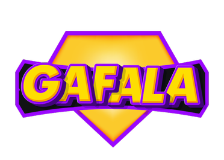

In the year 2065 a research facility on earth found a rare gem that has been never seen before, after many experiments on the gem they found out that the gem holds a
tremendous amount of energy that can change the course of the future but the research facility has kept the research secret so it would never fall under the wrong hands.
The research facility believed that this can be a game changer for the colonisation process that is happening on mars.
By this time earth was partially inhabitable and the
people who could afford the trip to mars left and many were left behind on earth, the research facility built a base on mars hoping to find the same
type of gem they found on their previous home, earth! After sending many
excavation teams to different planets, they found a source on a planet and they called it Gafala, thus the Gafala project was initiated.
At the beginning of 2078 the G facility sent out a contract for anyone with a requirement of owning a spaceship and
having mechanical skills. The purpose of this contract was to form an excavation team and send them to Gafala planet
but the information that was available for people was labelled confidential. The other member of the team was a G
facility scientist with the task to find the location of the gems underground.
It took them a four year journey to reach their destination, the team was made up of two members: Noah Nicholas as a pilot and excavator,
Anya Arhur as a researcher and team manager. After their landing, they realised Gafala was not like any other planet
they have seen before because from the looks of the surface, it seemed like a newborn planet covered with hot lava!